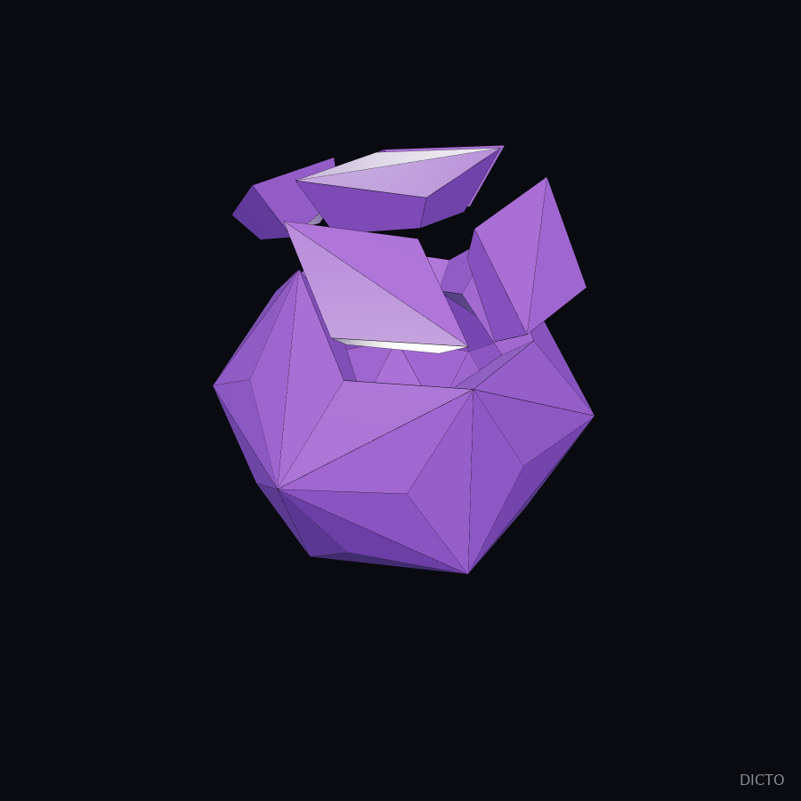
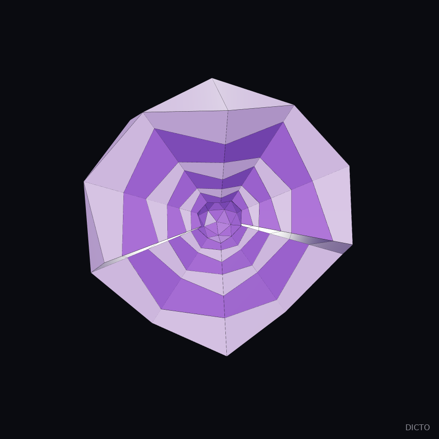
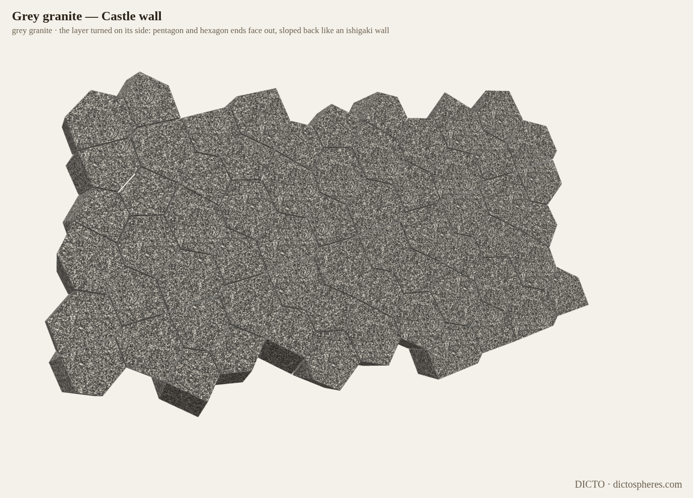

Scutoids in Three Dimensions The Permutohedron Paradigm, Chapter 5: the exchange of neighbours, from the orderings of five things to flat-faced scutoid shells, their polar flip and the cycle that fills space
DICTO (artist and geometer, Osaka, Japan) · dictospheres.com · contact@dictospheres.com · ORCID 0009-0001-2620-2036
DICTO: ideas, names, constructions and direction. Computation, verification and drafting with Claude (Anthropic).
DRAFT chapter for DICTO's read. Re-edited from the draft Scutoids: Layers, Shells and Cycles (10 November; its defect experiment stays there). New here: Section 1 (studies/2026-11-11-paradigm-ch5, swap_orderings.py with log, exact, FINAL ok). Theorems 5.2–5.4 checked as in that draft (faces flat to 10⁻¹³, volumes adding exactly).
A scutoid is a cell whose outline changes on the way through: two cells that touched stop touching, and two others start (Gómez-Gálvez et al. 2018). In this book's language it is an exchange of neighbours, the move that joins two orderings on an edge of the permutohedron, seen in a slice.
1. Where the exchanges happen
Proposition 5.1. Sweep the 4D permutohedron, whose corners are the 120 orderings of 1, …, 5, by the height f(x) = u · x with u1 < u2 < … < u5. The edge from an ordering to the one with the values k and k + 1 exchanged goes down exactly when k stands to the left of k + 1. So a corner has as many edges below as there are such k, and the corners with 0, 1, 2, 3, 4 edges below number 1, 26, 66, 26, 1. The scutoid exchanges of the slice happen at the 66 orderings in which exactly two values k stand to the left of k + 1.
Proof. Exchanging k (at position p) and k + 1 (at position q) changes f by up − uq, negative exactly when p < q. A corner with two edges below is where the slice makes an exchange of neighbours (#104, Theorem 1); with one, a cell is born; with three, one dies. The counts are the Eulerian numbers, checked by listing all 120 orderings for three directions u (swap_orderings.py). ∎
2. A flat-faced scutoid
Take the hexagonal tiling, shrink every second vertical edge of every second row to a point and reopen it across: a cell that is a hexagon below and a pentagon above, with the Y-corner halfway and 13 faces, every one of them flat (Figure 1).
Theorem 5.2 (the scutoid shell). Shrink every hexagon–hexagon edge of a truncated icosahedron to a point (the surface becomes an icosidodecahedron) and reopen each point across, between the two pentagons (it becomes a truncated dodecahedron). The 32 cells between the three nested surfaces, 12 growing pentagon → pentagon → decagon and 20 shrinking hexagon → triangle → triangle, have every face flat for any three radii that nest, and fill the shell exactly once.
Why flat. Each core edge and the middle edge above it are perpendicular to the same mirror plane, so they are parallel and the side face between them is a flat trapezoid; a shrinking edge gives a triangle. Checked: every face flat to 10⁻¹³, the 32 volumes add to V(outside) − V(core).
Theorem 5.3 (the polar flip). The polar of that sequence is pentakis dodecahedron → rhombic triacontahedron → triakis icosahedron: each pair of triangles across a 6–6 edge flattens into a rhombus and folds back along the other diagonal. The shell between the outer two splits into 30 congruent cells, one per rhombus, every face flat. On triangles the scutoid move cannot run; in the polar it becomes a diagonal flip.
Theorem 5.4 (the cycle). The scutoid move and the flip each undo themselves, and with the two polar swaps they close a square: truncated icosahedron → truncated dodecahedron → triakis icosahedron → pentakis dodecahedron → truncated icosahedron. As nested shells this fills all space except the centre, self-similarly: with four scutoid shapes (scale 1.578 per period), or through the polar with two flip shapes (scale 1.802).
Figure 1. The flat-faced scutoid.

Figure 2. The polar flip shell (Theorem 5.3).Figure 3. The cycle as an onion (Theorem 5.4), cut in half.

Figure 7. The cycle through the polar: an onion of two alternating flip shapes (Theorem 5.4).
3. Layers that change neighbours
A block of eight. Eight convex scutoids, every one exchanging pentagon and hexagon between its ends, fill one flat layer, and the layers stack straight up; the pieces are chunky (sphericity 0.825–0.835, about that of a cube). Turned on its side the same group builds a wall whose face is a mosaic of pentagon and hexagon ends, sloped back like an ishigaki castle wall (Figures 4, 5).
Proposition 5.5 (truncated icosahedra in a crystal). Truncated icosahedra of edge 1 in layers, every link a pentagon facing a hexagon, stacked as closely as the links allow: space cut into one cell per ball makes every cell exchange neighbours twice, below and above its layer's middle plane. The layer spacing is an algebraic number of degree 8, h = 3.43700237509909…, and the four exchange corners form one orbit at ±0.34113 from the middle plane (computed to 400 digits).
Figure 4. The block of eight in red granite.

Figure 5. The castle wall.Figure 6. Slices through the crystal of Proposition 5.5: the cells change neighbours twice per layer.
Back to the book. In the 4D permutohedron the exchanges of neighbours come one at a time, 66 of them, each at an ordering (Proposition 5.1); round the truncated icosahedron they come all at once, 30 in one shell, held flat by its mirrors (Theorem 5.2). Chapter 7 counts them in four dimensions for every simple polytope.
Sources
P. Gómez-Gálvez, P. Vicente-Munuera, A. Tagua, C. Forja, A. M. Castro, M. Letrán, A. Valencia-Expósito, C. Grima, M. Bermúdez-Gallardo, Ó. Serrano-Pérez-Higueras, F. Cavodeassi, S. Sotillos, M. D. Martín-Bermudo, A. Márquez, J. Buceta and L. M. Escudero, Scutoids are a geometrical solution to three-dimensional packing of epithelia, Nature Communications 9 (2018) 2960, doi:10.1038/s41467-018-05376-1. DICTO: Scutoids: Layers, Shells and Cycles (draft of 10 November 2026; studies of 17 October, 6–7 and 10 November); #104 Scutoid Tissues in Four Dimensions (Theorem 1 and the Eulerian counts of Theorem 1′).
Further reading. T. K. Petersen, Eulerian Numbers, Birkhäuser (2015), doi:10.1007/978-1-4939-3091-3 · G. M. Ziegler, Lectures on Polytopes, Graduate Texts in Mathematics 152, Springer (1995), doi:10.1007/978-1-4613-8431-1 · A. Postnikov, Permutohedra, associahedra, and beyond, Int. Math. Res. Not. 2009 (2009) 1026–1106, doi:10.1093/imrn/rnn153. Each DOI checked against its publisher's record (Crossref, 11 November 2026).